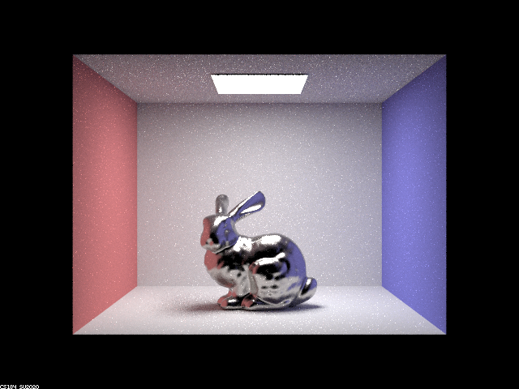
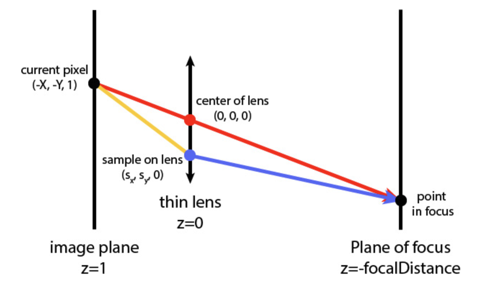
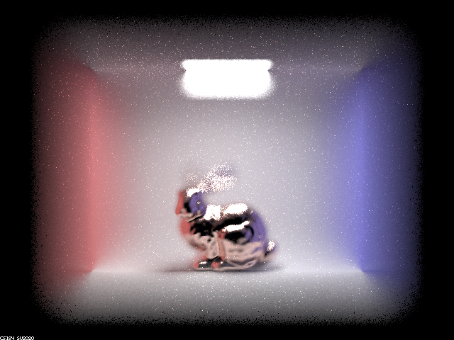
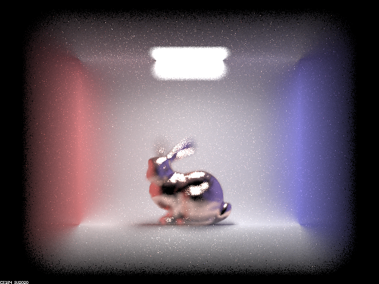
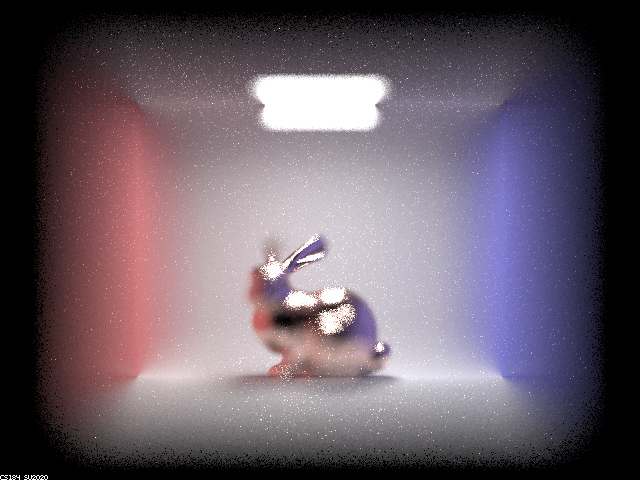
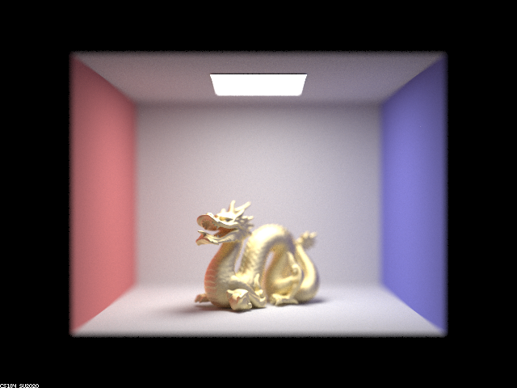
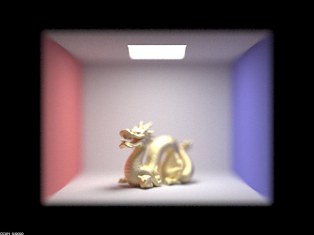
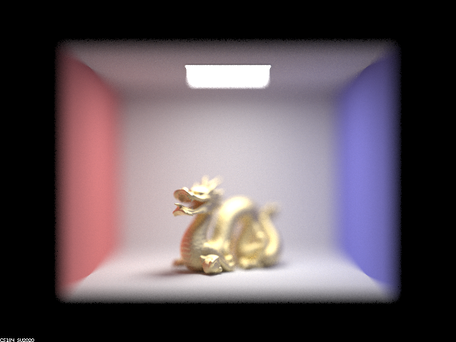

Team Member: Jason Yang
In this project, I completed parts 2 and 4, where I implemented the microfacet BRDF and depth of field using a thin lens.
When implementing the microfacet BRDF, I first implemented the following parts in order: the evaluation function, the normal distribution function, the fresnel term, and finally importance sampling for the microfacet BRDF.
When implementing the depth of field, I changed the way that camera rays are generated by uniformly sampling from the thin lens.
The microfacet BRDF was implemented in four steps.
First, I implemented the microfacet BRDF evaluation function f(wo, wi), which is calculated with this formula: (F(wi) * G(wo, wi) * D(h)) / (4.0 * dot(n, wo) * dot(n, wi)). h is calculated by taking the wo + wi and the normalizing it, and n is the (0, 0, 1) 3D vector. However, if either dot(n, wi) or dot(n, wo) are less than or equal to 0, I return a zero 3D vector, (0, 0, 0).
Second, I implemented the normal distribution function D(h). I simply returned (exp(-(pow(sin_theta(h)/cos_theta(h), 2)) / pow(alpha, 2))) / (PI * pow(alpha, 2) * pow(cos_theta(h), 4)).
Third, I implemented the fresnel term, F(wi). I first computed the Rs value, which was ((eta * eta + k * k) - 2.0 * eta * cos_theta(wi) + pow(cos_theta(wi), 2)) / ((eta * eta + k * k) + 2.0 * eta * cos_theta(wi) + pow(cos_theta(wi), 2)), and then I computed the Rp value, which was ((eta * eta + k * k) * pow(cos_theta(wi), 2) - 2.0 * eta * cos_theta(wi) + 1.0) / ((eta * eta + k * k) * pow(cos_theta(wi), 2) + 2.0 * eta * cos_theta(wi) + 1.0). Then, I returned (Rs + Rp) / 2.
Finally, I implemented the importance sampling function, sample_f(wo, *wi, *pdf). I first computed the 3D normal vector (0, 0, 0) and r to be a 2D vector with values between 0 and 1 in each dimension, computed with sampler's get_sample method. Then, I computed theta_h and phi_h. Theta_h was calculated to be atan(sqrt(-pow(alpha, 2) * log(1.0 - r.x))), and phi_h was calculated to be 2.0 * PI * r.y. Next, I calculated p_theta which was (2.0 * sin(theta_h))/(pow(alpha, 2) * pow(cos(theta_h), 3)) * exp(-pow(tan(theta_h), 2) / pow(alpha, 2)) and p_phi, which was 1.0 / (2.0 * PI). Then, I created the sampled microfacet normal h, which was converting a length 1 vector with spherical cooordinate angles theta_h and phi_h into cartesian coordinates. I calculated h to be Vector3D(sin(theta_h) * cos(phi_h), sin(phi_h) * sin(theta_h), cos(theta_h)). Next, I set wi to be the reflection of wo according to h, which was -wo + (2.0 * dot(wo, h)) * h. Then, I set the pdf, which was ((p_theta * p_phi) / sin(theta_h)) / (4.0 * dot(*wi, h)). After, I checked to see if the sampled wi is valid. If it is not valid, I set the pdf value to 0 and return a 3D (0, 0, 0) vector. If it is vaild, I return the result of f called on wo and *wi.
Why Images Look the Way They DoUnlike in project 3-1, upon completion of the code in project 3-2, when we evaluate the BRDF using the sample_f function, we evaluate the microfacet BRDF instead. The reflected rays that are generated using the microfacet BRDF behave differently than the diffuse lambertian BSDF due to the equation that we use to generate the BRDF. Therefore, since these reflected rays are different due to the different BRDFs, the images rendered with this microfacet BRDF look the way that they do.
Show a screenshot sequence of 4 images of scene CBdragon_microfacet_au.dae rendered with α set to 0.005, 0.05, 0.25 and 0.5. The other settings should be at least 128 samples per pixel and 1 samples per light. The number of bounces should be at least 5. Describe the differences between different images. Note that, to change the α, just open the .dae file and search for microfacet.CBdragon_microfacet_au.dae rendered with α set to 0.005
CBdragon_microfacet_au.dae rendered with α set to 0.05
CBdragon_microfacet_au.dae rendered with α set to 0.25
CBdragon_microfacet_au.dae rendered with α set to 0.5
In the rendered image with α value set to 0.005, we see that the dragon is quite reflective, since I see that the left side of the dragon takes on the color red from the left wall. Similarly, the parts of the dragon that face the blue wall take on a blue color, which is reflected from the blue wall. Additionally, the parts of the dragon facing forward have quite a black color. There are quite a white spots in the picture. Overall, the dragon is very reflective.
As we increase the α value to 0.05, we see that the dragon becomes less reflective, as it absorbs more of the light from the light source at the top of the image. Compared to the rendering with α set to 0.005, the sections of the dragon that face up toward the light take on a whiter color, which was previously black.
As we further increase the α value to 0.25 and 0.5, we see that the dragon is less and less reflective, and the dragon looks far less shiny and more smooth. The color of the dragon in different directions is more golden, and the colors that are reflected onto the dragon (the red, blue, and black from the walls) are almost gone and replaced by a golden color at the α value of 0.25. At the α value of 0.5, the colors that are reflected onto the dragon are almost completely gone, meaning that the reflections on the dragon from other parts of the image play lesser and lesser of a role in because of the alpha value.
Show two images of scene CBbunny_microfacet_cu.dae rendered using cosine hemisphere sampling (default) and your importance sampling. The sampling rate should be fixed at 64 samples per pixel and 1 samples per light. The number of bounces should be at least 5. Briefly discuss their difference.CBbunny_microfacet_cu.dae rendered with cosine hemisphere sampling

CBbunny_microfacet_cu.dae rendered with importance sampling.
We see that in the image with cosine hemisphere sampling, there are a lot of black specks, since we are only taking 64 samples per pixel and 1 sample per light. In the image with importance sampling, we see that there are no more black specks. However, in both images, there are still some white specks that are generated as a result of the low samples per pixel. Outside of the black and white specks, the rest of the pixel colors look indistinguishable.
Show at least one image with some other conductor material, replacing eta and k. Note that you should look up values for real data rather than modifying them arbitrarily. Tell us what kind of material your parameters correspond to.CBbunny_microfacet_cu.dae whose eta and k values are replaced by the eta and k values of gold. eta = (0.21646, 0.42833, 1.3284) k = (3.2390, 2.4599, 1.8661)
CBbunny_microfacet_cu.dae whose eta and k values are replaced by the eta and k values of titanium. eta = (2.6640, 2.5400, 2.3075) k = (3.7080, 3.4300, 3.0850)
I implemented the generate_ray_for_thin_lens function found in camera_lens.cpp. I followed the diagram found in the spec to implement this function.
I first calculated the x and y values of the ray in camera space. The x value in camera space is equal to (the x value in world space - 0.5) * 2 * tan(0.5*(radians(hFov))), and the y value in camera space is equal to (the y value in world space - 0.5) * 2 * tan(0.5*(radians(vFov))). Then, I generated the 3D pLens vector whose x value was lensRadius * sqrt(rndR) * cos(rndTheta), y value was lensRadius * sqrt(rndR) * sin(rndTheta), and z value was 0. Then, I created the direction of the red vector, which was a 3D vector whose x value was the x value in camera space, y value was the y value in camera space, and z value was -1. Then, the point of focus was the direction of the red vector, but z value was focalDistance, which is just the direction of the red vector multiplied by focalDistance. Then, the direction of the blue vector was the normalized vector that is the point of focus - pLens. Finally, I created the ray to return, whose origin was the world coordinate version of pLens + pos, and direction was the world coordinate version of the normalized blue direction vector. I set the ray's min_t to nClip and max_t to fClip.
Why Images Look the Way They DoImages generated with the thin lens look this way since the lens refracts the light rays that go from the object to the sensor. Upon reaching the sensor, if all of the light rays that pass through the lens converge at the sensor, that depth of the object is in focus. However, upon reaching the sensor, if the light rays that pass through the lens do not converge at the sensor but at a closer focal distance or a farther focal distance, the object will not be in focus. The closer the point of convergence that the rays that pass through the lens are to the sensor, the more focused will that part of the object be.
In a few sentences, explain the differences between a pinhole camera model and a thin-lens camera model.A pinhole camera model is an idealization of the thin lens as aperture shrinks to zero. Here, since there is no lens, there is no bending of the ray of light that goes from the object to the sensor. However, with the thin-lens camera model, the lens bends the ray of light that eventually hits the sensor. Because of this, we are able to have depth of field and not focus on everything in the picture at the same time.
Show a "focus stack" where you focus at 4 visibly different depths through a scene. Make sure to include all screenshots.CBbunny_microfacet_cu.dae with depth = 4.5
CBbunny_microfacet_cu.dae with depth = 4.6
CBbunny_microfacet_cu.dae with depth = 4.7
CBbunny_microfacet_cu.dae with depth = 4.8
Show a sequence of 4 pictures with visibly different aperture sizes, all focused at the same point in a scene. Make sure to include all screenshots.CBdragon_microfacet_au.dae with aperture = 0.04
CBdragon_microfacet_au.dae with aperture = 0.15
CBdragon_microfacet_au.dae with aperture = 0.27
CBdragon_microfacet_au.dae with aperture = 0.4